Hanamaki
Hanamaki · Iwate
Hanamaki
Highlighted on the Iwate map.
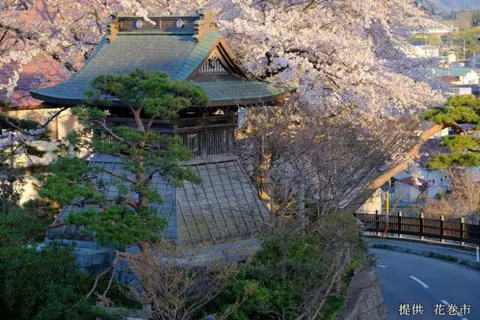
Stay
山の神温泉 別墅 清流館
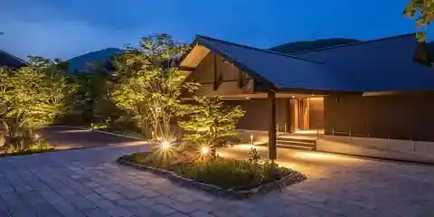
Yama No Kami Onsen Bessho Seiryuu Kan
Onsen lodging in Hanamaki, Iwate.
ホテルグランシェール花巻
Hoteruguranshieeru Hanamaki
Hotel in Hanamaki, Iwate.
ホテル 狩野
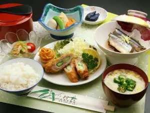
Hoteru Kano
Hotel in Hanamaki, Iwate.
割烹旅館 廣美亭
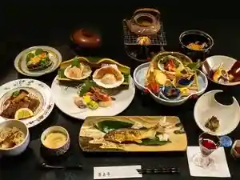
Kappou Ryokan Hiromi Tei
Ryokan inn in Hanamaki, Iwate.
金矢温泉ホテル銀河パークはなまき
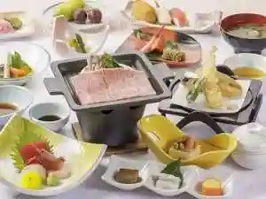
Kanaya Onsen Hoteru Ginga Paaku Hanamaki
Hotel in Hanamaki, Iwate.
花巻温泉 ホテル千秋閣（せんしゅうかく）
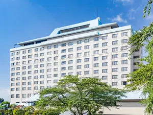
Hanamaki Onsen Hoteru Senshuu Kaku ( Senshuukaku )
Hotel in Hanamaki, Iwate.
Dining
Badalone
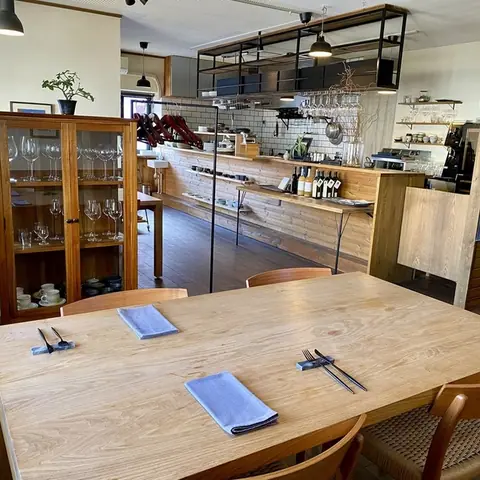
Badalone
Italian restaurant in Hanamaki, Iwate.
HANAMAKI モダンチャイニーズ 蓮
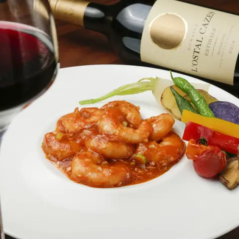
Hanamaki Modanchainiizu Hasu
Chinese restaurant in Hanamaki, Iwate.
味楽苑 本店
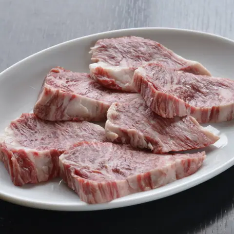
Aji Raku En Honten
Yakiniku (grilled meat) restaurant in Hanamaki, Iwate.
さかえや 本店
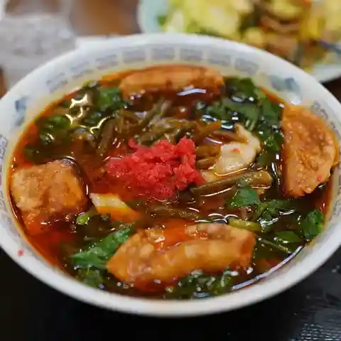
Sakaeya Honten
Ramen shop in Hanamaki, Iwate.
夜来香
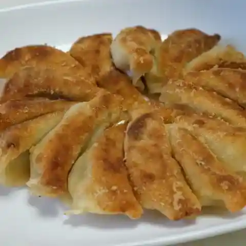
Yarai Kaori
Gyoza restaurant in Hanamaki, Iwate.
焼肉・定食・冷麺 味楽苑 道の駅店
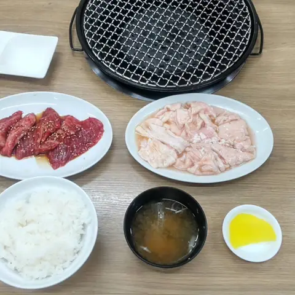
Yakiniku Teishoku Reimen Aji Raku En Michi No Eki Mise
Yakiniku (grilled meat) restaurant in Hanamaki, Iwate.
ピッツェリア チンクエ
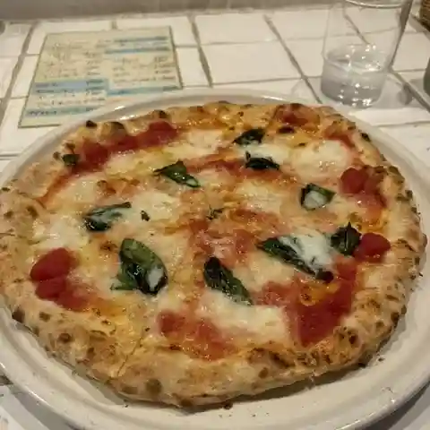
Pittsueria Chinkue
Pizzeria in Hanamaki, Iwate.
佳松園
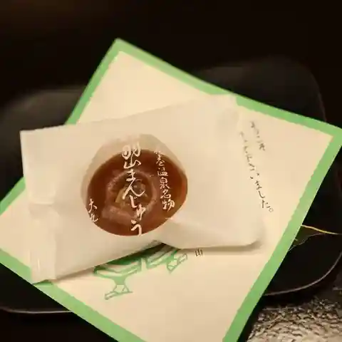
Kashou Sono
Ryokan restaurant in Hanamaki, Iwate.
リットワークプレイス
Rittowaakupureisu
Beer bar in Hanamaki, Iwate.
いしどりや懐食 新亀家
Ishidoriya Futokoro Shoku Shin Kame Ie
Japanese restaurant in Hanamaki, Iwate.
マルカンビル大食堂
Marukanbiru Daishokudou
Shokudo diner in Hanamaki, Iwate.
やぶ屋総本店
Yabu Ya Souhonten
Soba restaurant in Hanamaki, Iwate.
支那そば 僉
Shina Soba Sen
Ramen shop in Hanamaki, Iwate.
山猫軒
Yamaneko Ken
Yoshoku (Western-style) restaurant in Hanamaki, Iwate.
食事処やはぎ
Shokuji Tokoro Yahagi
Shokudo diner in Hanamaki, Iwate.
嘉司屋
Ka Tsukasa Ya
Soba restaurant in Hanamaki, Iwate.
一品香
Ippin Kaori
Chinese restaurant in Hanamaki, Iwate.
石窯パン工房ミッシェル 花巻本店
Ishigama Pan Koubou Misshieru Hanamaki Honten
Bakery in Hanamaki, Iwate.
二丁目食堂
Nichoume Shokudou
Ramen shop in Hanamaki, Iwate.
ボン・ディア
Bon Dia
Soft-serve stand in Hanamaki, Iwate.
なめとこ山庵
Nametoko Yama Iori
Soba restaurant in Hanamaki, Iwate.
ポパイ
Popai
Yoshoku (Western-style) restaurant in Hanamaki, Iwate.
いわて花巻大食堂
Iwate Hanamaki Daishokudou
Shokudo diner in Hanamaki, Iwate.
Sights
Kaachan Restaurant Tsuta no Wa
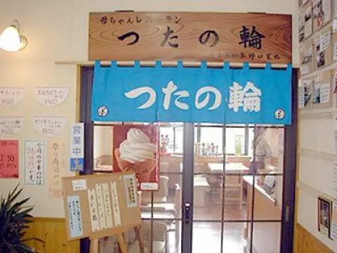
Farmer's mothers' restaurant. It is a taste of mother's cooking using fresh ingredients from the Towa area of Hanamaki City.
Kawaranobo Campsite
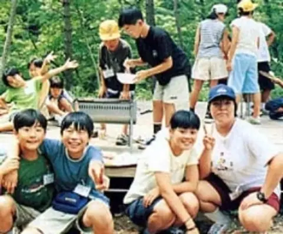
Free campground convenient for climbing Hayachine Peak. Reservations are not required.
Daiyaki Pottery
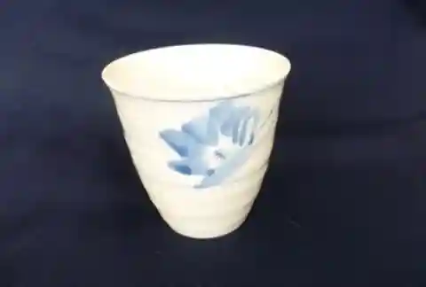
The clay was found in the hot spring resort of Mt. Manjusan, and the potters worked hard to create a robust and elegant product that could withstand the cold climate of the country.
Marukan Building Grand Dining Hall
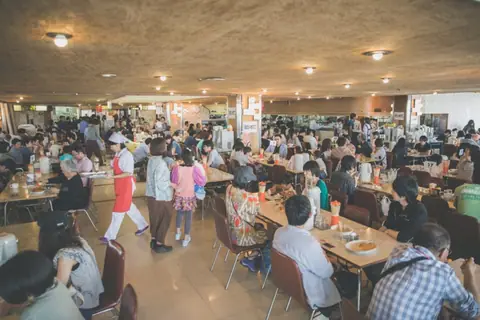
The Marukan Department Store Daishokudo, which had been closed and was missed, was revived on February 20, 2017 as the "Marukan Building Daishokudo".
Hakkin Pork (Platinum Pork)
Platinum Pork" is a brand of pork raised in the vast land of Iwate, one of the leading agricultural prefectures in Japan.
Shinkameya Japanese Restaurant
The restaurant boasts "Rokko Hitsumi," a local dish of Iwate.
Roadside Station Hanamaki Seinan
Opened on August 7, 2020. The nickname is "Kenji and Kotaro no Sato."
Ginga Plaza Yamanekoken
"Ginga Plaza Yamanekoken" is directly opposite Shin-Hanamaki Station.
Milk Kobo Bon Dia
Bon Dia Soft, directly from the factory, is characterized by its crispy texture.
Sobabo Kamiya
At the handmade soba shop "Sobabo Kamiya" located inside the day-trip bathing facility "Seika no Yu" in Dai Onsen, Hanamaki City, you can enjoy the natural sweetness of soba and the smooth texture made with 100% buckwheat core flour without using binder.
Sanshu no Ninki Sake
Sake brewed in Ishidoridani-cho, Hanamaki City, the village of Nanbu Chief Brewer, Edel wine made from grapes in Osako-cho, Hanamaki City blessed with Mine Hayachine, and Hie Shochu made from barnyard millet from Hanamaki, which boasts the highest…
Enshu-yaki “Mine no Sanga” (Original)
"Ganso Enshuyaki Mine no Sanga" from Takako Confectionery, a long-established confectionery store founded in the Meiji era, is a famous confectionery that represents Osako-cho, Hanamaki City.
Morioka Castle Time Bell (Hanamaki Castle Time Bell)
Hour bell Nanbu Morioka Castle Tower Bell (Hanamaki Castle Hour Bell)
Kamabuchi Falls
Located in the depths of Hanamaki Onsen, the clear water of the Daikawa River flows down into several streams, like a tama-sudare, over a circular Oiwa stone measuring 8.5 meters high and 30 meters wide.